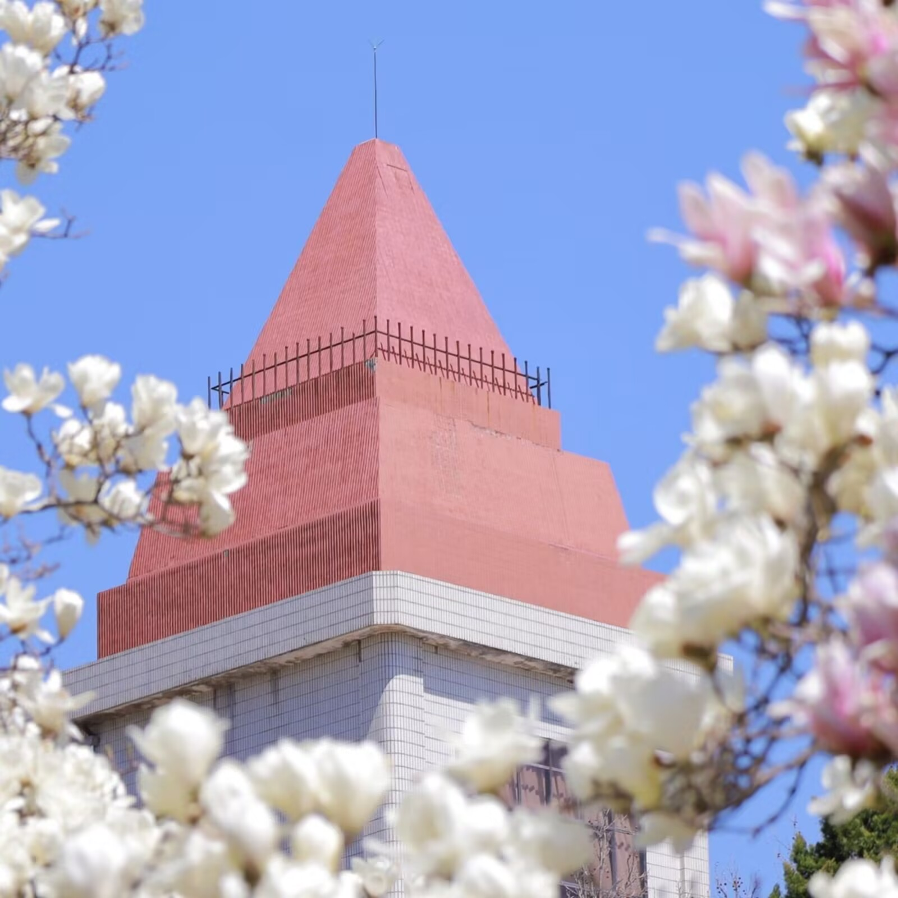
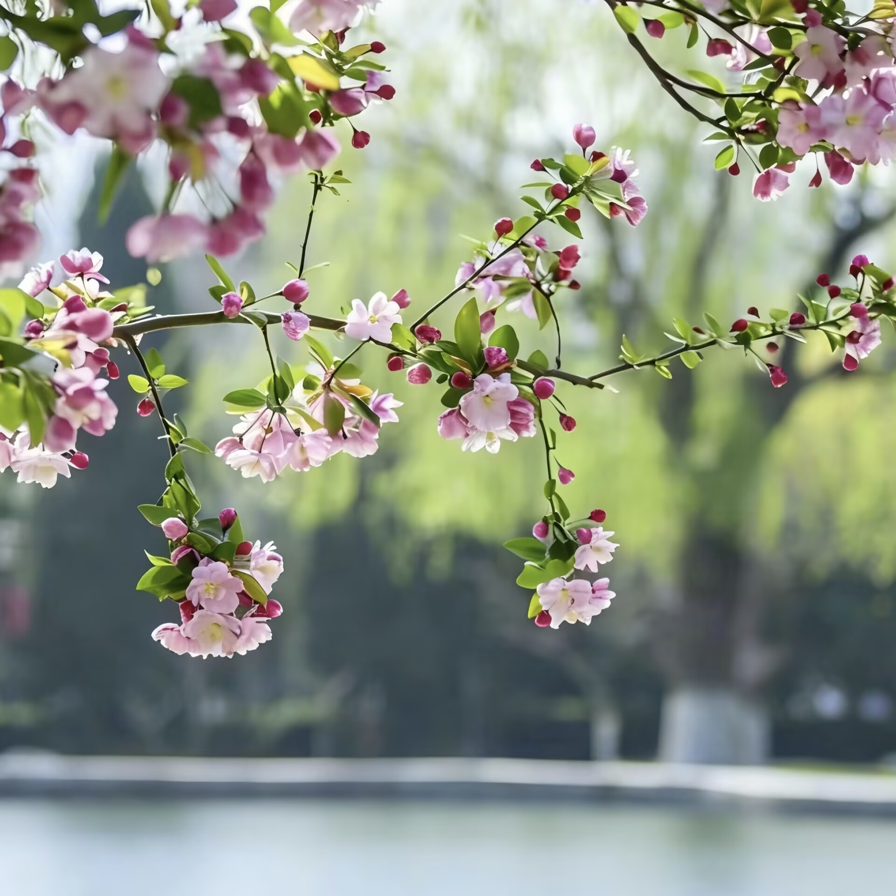
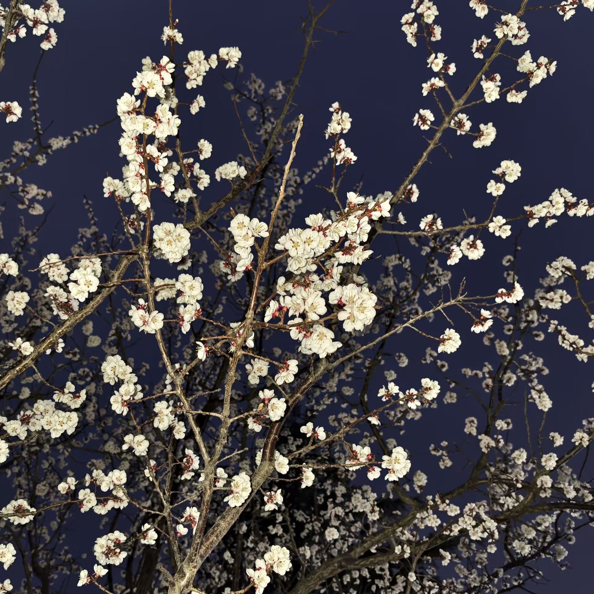

春天的校园处处充满生机，
乳子湖畔的柳，先是冒了鹅黄的尖，不过几场微雨，便抽出嫩生生的新叶，
柔柔地垂着，风一来，便拂过澄澈的水面，漾开一圈圈晕着绿意的涟漪。
玉兰开得热烈，满树的白像是积了一冬的雪，忽然都在暖阳里绽开了似的，
花瓣带着清润的香气，风一吹便簌簌落下，铺成一条缀满白花的小径。
花下走过三两个学生，书包上晃着细碎的阳光，笑声混着花香，飘向远处的教学楼。
我沿着小路慢慢地走，空气里满是青草和泥土的气息，暖暖的，软软的，
像是被春日的阳光揉过一般，连呼吸都变得轻盈起来。路边的迎春开得灿烂，
明黄的花朵缀满枝条，像是把一整个春天的阳光都攒在了枝头。
不知哪株树上，鸟儿叫得正欢，一声接一声，清脆婉转，把整个春天都叫醒了。
连平日里安静的图书馆前，也多了几分生机，同学们捧着书本坐在长椅上，
阳光落在书页上，落在年轻的笑脸上，满是青春的模样。
这春光，实在让人心里也跟着亮堂起来。春日的校园，没有喧嚣，只有温柔，
每一缕风都带着生机，每一寸土地都藏着诗意，每一个角落都写满了青春的故事。
走在这样的校园里，仿佛连时光都慢了下来，只想把这春日的美好，
一帧一帧地记在心里，不负这大好春光，不负这校园里的青春岁月。


